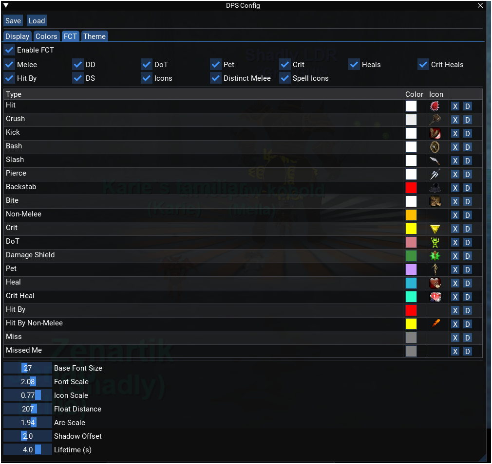

Floating Combat Text (FCT)
Last Updated: 2026-04-23
Overview
Floating Combat Text (FCT) renders damage and heal numbers directly over mob heads in the 3D game world. Numbers pop in enlarged, float upward, and fade out over their lifetime. Each number is anchored to the 3D position of the spawn it belongs to, projected onto the 2D screen every frame, so the text tracks the mob as it moves or as you turn the camera.
FCT is disabled by default. To enable it:
- Run
/mydps fctin game to toggle it on or off (prints confirmation to chat). - Open the config window (
/mydps config) and check the Enable FCT checkbox in the "FCT" tab.
When enabled, every damage or heal event that passes the filter chain produces a floating
number anchored to the target spawn. Outgoing damage shows plain numbers, heals show
+N, and incoming damage shows -N. All numbers use the same
k/m abbreviation format as the rest of the plugin (e.g., "1.2k", "3.4m"). Each number can
also display an EQ spell icon to its left, resolved from the damage type or spell data.
Architecture
The FCT system is implemented entirely in MyDPSFloatingText.h as a
header-only module. It consists of two types:
- FCTEntry — a single floating text element with position, color, lifetime, and display text.
- FCTManager — owns a fixed-size ring buffer of 64
FCTEntryslots and handles the full lifecycle: filtering, creation, animation, projection, and rendering.
The engine owns a single FCTManager instance as
engine.fctManager. The renderer calls into it each frame.
FCTEntry Fields
| Field | Type | Default | Description |
|---|---|---|---|
spawnID | int | 0 | Target spawn to anchor the text to. Must be positive for the entry to render. |
displayText | string | Formatted number: plain for outgoing damage, "+N" for heals, "-N" for incoming damage. | |
color | ImVec4 | white | Text color resolved from user's damageColors settings. Each type maps to a distinct color key. |
dirAngle | float | 0.0 | Direction angle in radians for the float path (from pre-defined upper-semicircle slots). |
arcAmount | float | 0.0 | Perpendicular arc curve magnitude (signed). Creates a smooth curved path that peaks at the midpoint of the lifetime. |
iconCellID | int | -1 | Icon cell index. 0–FCT_MAX_SPELL_ICON (499) = spell icon (A_SpellGems), FCT_ITEM_ICON_OFFSET (500)+ = item icon (A_DragItem, cell = id - 500). -1 means no icon is drawn. |
lifetime | float | 0 | Elapsed time in seconds since this entry was created. |
maxLifetime | float | 2.5 | Total duration from settings.fctLifetime. |
active | bool | false | Whether this slot is currently in use. |
Ring Buffer
FCTManager pre-allocates a vector of MAX_ENTRIES (64)
FCTEntry slots on first use. New entries are written at
m_nextSlot, which advances modularly:
m_nextSlot = (m_nextSlot + 1) % MAX_ENTRIES. When the buffer is full,
the oldest slot is silently overwritten. This means at most 64 floating numbers can
be visible simultaneously. In practice this is more than enough — with a 2.5s
default lifetime, you would need to produce more than 25 events per second to overflow.
Data Flow
Entry Creation
AddEntry is called from RecordDamage after spawn ID
resolution and damage accumulation are complete. It applies the following filter chain
in order, returning immediately if any check fails:
- Master toggle:
settings.showFCTmust be true. - Spawn ID check:
record.targetSpawnIDmust be greater than 0. Negative (synthetic) IDs cannot be projected to screen coordinates. - Miss filter:
record.isMissmust be false. Misses are not shown as floating text. - Damage filter:
record.damagemust be greater than 0. Zero-damage events are not shown. - Type toggle: The damage type must be enabled via its per-type setting (see the Type Filtering section below).
Text Formatting
The display text is formatted based on the event type:
| Event type | Format | Example |
|---|---|---|
| DirectHeal, CritHeal | +{number} | +2.5k |
| HitBy, HitByNonMelee | -{number} | -1.2k |
| All other types | {number} | 450 |
Numbers use the same FormatNumber abbreviation as the rest of the plugin:
values 1,000+ become "1.0k", values 1,000,000+ become "1.0m".
Color Resolution
Every FCT type uses a distinct color from the user's settings.damageColors
map. The color key is resolved by DamageTypeToColorKey(record.type), which
maps each damage type to its corresponding color key:
| DamageType | FCT Color Key | Default Color |
|---|---|---|
| Melee | "hit" | white (1.0, 1.0, 1.0) |
| NonMelee | "non-melee" | cyan (0.0, 1.0, 1.0) |
| DoT | "dot" | yellow (1.0, 1.0, 0.0) |
| PetMelee / PetNonMelee | "pet" (overridden) | purple (0.8, 0.6, 1.0) |
| Crit | "crit" | yellow (1.0, 1.0, 0.0) |
| DirectHeal | "heal" | green (0.0, 1.0, 0.5) |
| CritHeal | "critHeals" | cyan (0.0, 1.0, 1.0) |
| HitBy | "hit-by" | red (1.0, 0.0, 0.0) |
| HitByNonMelee | "hit-by-non-melee" | yellow (1.0, 1.0, 0.0) |
Melee is the only type without a dedicated FCT color key — it uses "hit"
because melee subtypes (crush, slash, backstab, etc.) are only distinguished in the combat
spam overlay, where the attack verb itself is used as the color key. In FCT, all melee
hits share the "hit" color.
Pet types require an explicit override in AddEntry because
DamageTypeToColorKey maps PetMelee to "hit" and PetNonMelee to
"non-melee" (for combat spam purposes). The FCT code overrides both to the
"pet" key so pet damage is visually distinct.
All colors are user-configurable through the Colors section in the config window. If a color key is not found in the map, white (1, 1, 1, 1) is used as a fallback.
Spell Icons
Each FCT entry can display an EQ spell icon to the left of the damage number. Icons are
loaded from the A_SpellGems CTextureAnimation via
pSidlMgr->FindAnimation() and drawn with
mq::imgui::DrawTextureAnimation() on the background draw list. The icon scales
with text height (modified by fctIconScale) and participates in all animations
(pop, float, fade). Icon alpha is applied through an MQColor tint.
Icon resolution happens in MyDPSEngine::ResolveSpellIconID(), which is called
from RecordDamage before AddEntry. The mapping by damage type:
| DamageType | Icon Cell ID | Notes |
|---|---|---|
| Melee | 49 | Generic melee icon. Kick uses 201, bash uses 155. |
| PetMelee | 3 | |
| PetNonMelee | 55 | |
| Crit (melee) | 50 | |
| DirectHeal / CritHeal | 0 (or dynamic) | Default icon 0. When fctUseSpellIcons is true, looks up the actual heal spell icon via GetSpellByName() first. |
| NonMelee / DoT / Crit (spell) | dynamic | When fctUseSpellIcons is true, looked up via GetSpellByName() using pSpell->SpellIcon. When false, returns type defaults (-1 for NonMelee/DoT, 50 for melee Crit). |
| HitBy / HitByNonMelee | -1 | No icon drawn for incoming damage. |
For bolt spells with travel time, m_lastCastSpellIcon persists the icon cell
ID until the next cast begins, so the icon is still available when the delayed damage event
arrives.
Arc-Based Directional Spread
When multiple hits land on the same spawn in quick succession, the floating numbers would stack directly on top of each other and become unreadable. The directional spread system prevents this by sending consecutive hits along different angles in the upper semicircle, each with a random perpendicular arc curve.
Eight pre-defined angle slots cover the upper semicircle from -150 degrees to -30
degrees (in screen coordinates, where negative Y is up). The slots are: straight up,
up-right, up-left, diagonal right, diagonal left, steep right, steep left, slight right.
Each spawn has a per-spawn angle slot index tracked in m_spawnAngleSlot
(an unordered_map<int, int> keyed by spawn ID) that cycles through
these slots so consecutive hits go different directions.
Each entry also receives a random perpendicular arc curve (arcAmount)
based on ARC_BASE (20px) scaled by the user's fctArcScale
setting. The arc peaks at the midpoint of the entry's lifetime and returns to zero,
creating a smooth curved path.
The motion math in Render() computes the final position each frame:
float distance = fctFloatDistance * EaseOutQuad(t);
float dx = cos(dirAngle) * distance;
float dy = sin(dirAngle) * distance;
float arcT = sin(PI_F * t); // peaks at t=0.5, returns to 0 at t=1.0
float perpX = -sin(dirAngle) * arcAmount * arcT;
float perpY = cos(dirAngle) * arcAmount * arcT;
float floatX = dx + perpX;
float floatY = dy + perpY;The directional component (dx, dy) uses OutQuad easing for
fast initial movement that decelerates. The arc component is perpendicular to the
direction of travel and follows a sine curve that peaks at the midpoint. Together, this
produces smooth curved paths that spread hits visually and never float downward (all
angles are in the upper semicircle).
The slot index resets automatically when no active entries remain for a given spawn
(cleaned up in Update).
Bone-Anchored Projection
ProjectSpawnToScreen converts a spawn's 3D world position to 2D screen
coordinates. This is called every frame for every active entry, so the floating text
tracks the mob as it moves or as you rotate the camera.
World Position
The function selects a bone anchor based on the spawn type, using two user-configurable
settings: fctBonePlayer (default: 11, eBoneChest) for player spawns and
fctBoneOther (default: 20, eBoneLegs) for NPC spawns. The bone index is
stored as an int in MyDPSSettings and cast to EBones
at the point of use, avoiding an eqlib dependency in the data header.
EBones boneIdx = static_cast<EBones>(
(pSpawn->Type == SPAWN_PLAYER) ? bonePlayer : boneOther);
CActorInterface* pActor = pSpawn->mActorClient.pActor;
if (pActor && pActor->GetBoneByIndex(boneIdx))
{
pActor->GetBoneWorldPosition(boneIdx, reinterpret_cast<CVector3*>(&worldPos), false);
}The default split (chest for players, legs for NPCs) improves visibility on large NPCs (dragons, giants) where chest-anchored text can float too high. Users can change the bone anchor for each spawn type via the config window's "Bone Anchors" section (two combo boxes) to handle edge cases like flying mobs or super-large spawns where a different bone produces better positioning.
The full list of 28 selectable bones is defined in GetFCTBoneList() in
MyDPSFloatingText.h. The first 6 entries (Head, Chest, Pelvis, Legs, Left
Boot, Right Boot) are the most practical choices; the remaining 22 bones are available
for fine-tuning.
If the actor or chest bone is unavailable (mob is too far away, model not loaded, or certain NPC types), the fallback uses the spawn's raw coordinates offset by avatar height:
worldPos = glm::vec3(pSpawn->Y, pSpawn->X, pSpawn->Z + pSpawn->AvatarHeight);glm::vec3 constructor receives them in
this order to match the graphics engine's expectations.
Eye Offset
After obtaining the world position, an eye offset from the graphics engine is applied:
glm::vec3 eyeOffset;
pGraphicsEngine->pRender->GetEyeOffset(*reinterpret_cast<CVector3*>(&eyeOffset));
worldPos += eyeOffset;This accounts for the camera's eye-level offset from the world origin.
Camera Transform and Perspective Divide
The world position is projected through the camera's transform matrix using dot products with the camera's axis coefficients:
float Ez = glm::dot(worldPos, glm::vec3(
camera->worldToEyeCoef[0][2],
camera->worldToEyeCoef[1][2],
camera->worldToEyeCoef[2][2]));
if (Ez <= 0.0f)
return false; // Behind the camera
float Ex = glm::dot(worldPos, camera->worldToEyeXAxisCot);
float Ey = glm::dot(worldPos, camera->worldToEyeYAxisCotAspect);
float reci = 1.0f / Ez;
outX = Ex * reci * camera->halfRenderWidth + camera->halfRenderWidth + camera->left;
outY = -Ey * reci * camera->halfRenderHeight + camera->halfRenderHeight + camera->top;Ez is the eye-space depth. If it is zero or negative, the spawn is behind
the camera and the entry is not rendered that frame (the function returns false).
Ex and Ey are the eye-space horizontal and vertical coordinates.
The perspective divide (* reci) projects them onto the 2D screen, scaled by
the camera's half-render dimensions and offset by the viewport origin.
The camera data comes from pDisplay->pCamera, cast to
eqlib::CCamera*. The required headers are
eqlib/graphics/CameraInterface.h, eqlib/graphics/Bones.h, and
eqlib/graphics/Actors.h.
Animation
Each active FCT entry progresses through three simultaneous animations, all driven by
the entry's lifetime relative to maxLifetime. The normalized
progress is t = lifetime / maxLifetime (0.0 at creation, 1.0 at expiry).
Pop-In Scale
For the first 0.3 seconds (POP_DURATION), the text scales from 1.4x
(POP_START_SCALE) down to 1.0x using an OutQuad easing function. This gives
a punchy "pop" effect when a number first appears.
float popT = std::min(entry.lifetime / POP_DURATION, 1.0f);
float scale = POP_START_SCALE + (1.0f - POP_START_SCALE) * EaseOutQuad(popT);
// At t=0: scale = 1.4
// At t=0.3: scale = 1.0 (stays at 1.0 for remainder)The easing function is EaseOutQuad(t) = t * (2.0 - t). This starts fast
and decelerates, making the scale-down feel snappy at the start and smooth at the end.
Directional Float with Arc
Over the full lifetime, the text travels along its assigned direction angle by
fctFloatDistance (default 150 pixels) using the same OutQuad easing on the
overall progress t. A perpendicular arc curve adds a smooth bend to the
path:
float distance = fctFloatDistance * EaseOutQuad(t);
float dx = cos(dirAngle) * distance;
float dy = sin(dirAngle) * distance;
float arcT = sin(PI_F * t);
float perpX = -sin(dirAngle) * arcAmount * arcT;
float perpY = cos(dirAngle) * arcAmount * arcT;
float floatX = dx + perpX;
float floatY = dy + perpY;Because all direction angles are in the upper semicircle (-150 to -30 degrees), entries always float upward. The OutQuad easing means entries move quickly at first and decelerate. The arc component peaks at the midpoint of the lifetime (t=0.5) and returns to zero at the end, creating a smooth curved trajectory rather than a straight line.
Fade Out
The text remains fully opaque for the first 60% of its lifetime (FADE_START =
0.6). After that, alpha decreases linearly from 1.0 to 0.0 over the remaining 40%:
float alpha = 1.0f;
if (t > FADE_START)
{
float fadeT = (t - FADE_START) / (1.0f - FADE_START);
alpha = 1.0f - fadeT;
}
// At t=0.0 to t=0.6: alpha = 1.0 (fully opaque)
// At t=0.8: alpha = 0.5
// At t=1.0: alpha = 0.0 (fully transparent, then deactivated)Animation Constants
| Constant | Value | Description |
|---|---|---|
MAX_ENTRIES | 64 | Ring buffer capacity |
PI_F | 3.14159265f | Pi constant (static constexpr float) used for arc sine calculations |
POP_DURATION | 0.3s | Duration of the pop-in scale animation |
POP_START_SCALE | 1.4x | Initial enlarged scale factor |
FADE_START | 0.6 | Fraction of lifetime at which fade begins (60%) |
NUM_ANGLE_SLOTS | 8 | Number of pre-defined direction angles in the upper semicircle |
ARC_BASE | 20px | Base perpendicular arc curve magnitude before fctArcScale multiplier |
Drop Shadow
Each FCT entry is rendered with a drop shadow to improve readability against the game world background. The shadow is drawn first, then the main text on top of it.
The shadow offset is scaled proportionally to the current font size:
float shadowOff = settings.fctShadowOffset * (fontSize / settings.fctBaseFontSize);This means larger text gets a proportionally larger shadow. With the defaults (fctShadowOffset=2.0, fctBaseFontSize=24.0, fctFontScale=1.5), the base font size during normal rendering is 24 * 1.5 = 36px, so the shadow offset is 2.0 * (36/24) = 3.0 pixels. During the pop-in phase, the font is larger (up to 1.4x), so the shadow offset is also larger (up to 4.2px).
The shadow color is black with alpha set to 80% of the entry's current alpha:
ImU32 shadowCol = ImGui::ColorConvertFloat4ToU32(ImVec4(0, 0, 0, alpha * 0.8f));The shadow is offset both right and down from the main text position:
drawList->AddText(font, fontSize, ImVec2(x + shadowOff, y + shadowOff), shadowCol, text);Rendering Pipeline
RenderFloatingText is called every frame from OnUpdateImGui.
Unlike the other three render calls (main window, config window, combat spam), it does
not create an ImGui window. Instead it operates on the background draw list.
Delta Time Computation
The renderer stores m_lastFCTUpdate (a
steady_clock::time_point) and computes delta time on each call:
auto now = std::chrono::steady_clock::now();
float dt = std::chrono::duration<float>(now - m_lastFCTUpdate).count();
m_lastFCTUpdate = now;
if (dt <= 0.0f || dt > 0.1f)
dt = 0.016f;The clamp to 16ms handles two edge cases: negative delta (clock skew) and large delta (first frame after FCT is enabled, or a long frame stall). Without the clamp, a large delta could cause entries to jump forward in their animation or expire prematurely.
Update and Render
After computing delta time, the renderer delegates to the FCT manager:
engine.fctManager.Update(dt);
engine.fctManager.Render(engine.settings);Update(dt) advances the lifetime of every active entry by
dt seconds. Entries whose lifetime exceeds maxLifetime are
deactivated. The spawn angle slot map is also cleaned using an optimized approach: a
std::unordered_set<int> of active spawn IDs is built in a single
pass over the entries (O(N)), then each spawn in m_spawnAngleSlot is
checked against the set (O(S)). This replaces the earlier O(S*N) nested loop that
rescanned all entries for every spawn slot. Spawns with no remaining active entries
have their slot index removed, so the directional spread resets for the next burst
of hits on that spawn.
Render(settings) iterates all active entries and for each one:
- Projects the spawn's world position to screen coordinates via
ProjectSpawnToScreen. Entries whose spawn is behind the camera or whose spawn no longer exists are skipped. - Computes normalized progress
t = lifetime / maxLifetime. - Computes pop scale, directional float offset (dx/dy + arc), and alpha fade.
- Computes final font size:
fctBaseFontSize * fctFontScale * popScale. - Measures text size with
font->CalcTextSizeAand centers the text horizontally around the projected screen position (offset by directional float). - Draws the spell icon (if
iconCellID >= 0and icons enabled) toImGui::GetBackgroundDrawList(). The icon is positioned to the left of the damage number, scaled with text height, and participates in all animations (pop, float, fade). - Draws the drop shadow to the same draw list.
- Draws the main text to the same draw list.
The background draw list renders behind all ImGui windows but on top of the EverQuest game world. This means FCT numbers appear in the 3D scene without being obscured by the DPS report or config windows.
Incoming Damage Resolution
FCT requires a positive spawn ID to anchor text to. Incoming events (HitBy,
HitByNonMelee, MissedMe, DirectHeal, CritHeal) do not go through
ResolveSpawnID because they are not outgoing damage. Their
targetSpawnID would remain 0, causing FCT to discard them.
To solve this, RecordDamage performs a late assignment after all damage
accumulation is complete:
if (record.targetSpawnID <= 0)
{
bool isIncoming = (record.type == DamageType::HitBy
|| record.type == DamageType::HitByNonMelee
|| record.type == DamageType::MissedMe
|| record.type == DamageType::DirectHeal
|| record.type == DamageType::CritHeal);
if (isIncoming && pLocalPlayer)
record.targetSpawnID = pLocalPlayer->SpawnID;
}This assigns your own character's spawn ID as the target, which makes
the FCT text float above your character's head. Incoming damage shows as red
-N numbers and heals show as green +N numbers floating
above you.
This assignment happens after damage/heal accumulation, so it does not affect combat
tracking, battle counters, or the currentTargets map. It is used exclusively
by the fctManager.AddEntry() call that immediately follows. See
Spawn ID Tracking for full details on the resolution
chain.
Configuration
All FCT settings are stored under the [FCT] INI section in the
per-character settings file at
[MQ Config Dir]\MQMyDPS\[Server]\[CharName].ini.
INI Keys
| INI Key | Struct Field | Type | Default | Description |
|---|---|---|---|---|
| Enabled | showFCT | bool | false | Master toggle. Also toggled by /mydps fct. |
| Melee | showFCT_Melee | bool | true | Show FCT for melee hits. |
| DD | showFCT_DD | bool | true | Show FCT for direct damage spells (NonMelee type). |
| DoT | showFCT_DoT | bool | true | Show FCT for damage-over-time ticks. |
| Pet | showFCT_Pet | bool | true | Show FCT for pet damage (PetMelee and PetNonMelee). |
| Crit | showFCT_Crit | bool | true | Show FCT for critical hits. |
| Heals | showFCT_Heals | bool | true | Show FCT for direct heals. |
| CritHeals | showFCT_CritHeals | bool | true | Show FCT for critical heals. |
| HitBy | showFCT_HitBy | bool | true | Show FCT for incoming damage (HitBy and HitByNonMelee). |
| DS | showFCT_DS | bool | true | Show FCT for damage shield procs (DamageShield type). |
| Lifetime | fctLifetime | float | 2.5 | Seconds each FCT entry remains visible before fading out. Range: 1.0 to 5.0. |
| BaseFontSize | fctBaseFontSize | float | 24.0 | Base font size in pixels. Range: 12.0 to 48.0. |
| FontScale | fctFontScale | float | 1.5 | Multiplier applied on top of BaseFontSize. Range: 0.5 to 3.0. |
| ShadowOffset | fctShadowOffset | float | 2.0 | Pixel offset for the drop shadow, scaled by font size ratio. Range: 0.0 to 5.0. |
| Icons | showFCT_Icons | bool | true | Toggle spell icons drawn to the left of FCT numbers. |
| IconScale | fctIconScale | float | 1.0 | Scales icon relative to text height. Range: 0.1 to 1.0. |
| FloatDistance | fctFloatDistance | float | 150.0 | How far (in pixels) entries travel along their direction angle. Range: 30 to 300. |
| ArcScale | fctArcScale | float | 1.0 | Multiplier for arc curvature. 0 = straight lines, higher = more curve. Range: 0.0 to 3.0. |
| DistinctMelee | fctDistinctMelee | bool | true | When true, each melee verb gets its own color and icon. When false, all melee uses generic "hit" styling. |
| UseSpellIcons | fctUseSpellIcons | bool | false | When true, spell-based types (NonMelee, DoT, Crit, DirectHeal, CritHeal) resolve the actual spell icon via GetSpellByName() before falling back to defaults. When false, only hardcoded defaults are used. |
| BonePlayer | fctBonePlayer | int | 11 | Bone index for anchoring FCT text on player spawns. Default 11 = eBoneChest. Configurable via the "Player Bone" combo in the config UI. |
| BoneOther | fctBoneOther | int | 20 | Bone index for anchoring FCT text on NPC spawns. Default 20 = eBoneLegs. Configurable via the "Other Bone" combo in the config UI. |
Config UI

The FCT section of the config window (/mydps config) is collapsed by
default (no ImGuiTreeNodeFlags_DefaultOpen flag). It contains:
- Enable FCT — Master checkbox toggling
showFCT. - 12 per-type checkboxes in a dynamic-column table (130px per column): Melee, DD, DoT, Pet, Crit, Heals, Crit Heals, Hit By, DS, Icons, Distinct Melee, and Spell Icons.
- 7 sliders with fixed 100px width, all using
ImGuiSliderFlags_AlwaysClamp:
| Slider Label | Range | Default | Format |
|---|---|---|---|
| Base Font Size | 12.0 – 48.0 | 24.0 | %.0f |
| Font Scale | 0.5 – 3.0 | 1.5 | %.2f |
| Shadow Offset | 0.0 – 5.0 | 2.0 | %.1f |
| Lifetime (s) | 1.0 – 5.0 | 2.5 | %.1f |
| Icon Scale | 0.1 – 1.0 | 1.0 | %.2f |
| Float Distance | 30 – 300 | 150.0 | %.0f |
| Arc Scale | 0.0 – 3.0 | 1.0 | %.2f |
Below the sliders, a Bone Anchors section provides two combo boxes (150px wide) for selecting which bone the FCT text anchors to:
| Combo Label | Setting | Default | Description |
|---|---|---|---|
| Player Bone | fctBonePlayer | Chest (11) | Bone anchor for player character spawns. |
| Other Bone | fctBoneOther | Legs (20) | Bone anchor for NPC and other non-player spawns. |
Each combo lists all 28 EQ bones from GetFCTBoneList(). The first 6
practical bones (Head, Chest, Pelvis, Legs, Left Boot, Right Boot) are separated from
the remaining bones by a visual separator in the dropdown.
Type Filtering
IsTypeEnabled maps each DamageType to its corresponding
FCT toggle setting. Types not listed in the switch statement return false and are never
shown as floating text.
| DamageType | FCT Toggle | Notes |
|---|---|---|
Melee | showFCT_Melee | |
NonMelee | showFCT_DD | |
DoT | showFCT_DoT | |
PetMelee | showFCT_Pet | Both pet melee and pet spells share one toggle. |
PetNonMelee | showFCT_Pet | |
Crit | showFCT_Crit | |
DirectHeal | showFCT_Heals | |
CritHeal | showFCT_CritHeals | |
HitBy | showFCT_HitBy | Both melee and spell incoming damage share one toggle. |
HitByNonMelee | showFCT_HitBy | |
Miss | (none) | Always filtered out — returns false. Also blocked by the isMiss check in AddEntry. |
MissedMe | (none) | Always filtered out — returns false. The pLocalPlayer assignment still happens, but IsTypeEnabled rejects it. |
DamageShield | showFCT_DS | Damage shield proc damage. |
IsTypeEnabled. Miss events are also blocked earlier by the
isMiss check in AddEntry. These types are intentionally excluded from
floating text to reduce visual clutter.
FCT Type Info List
The static function GetFCTTypeInfoList() returns the authoritative list of
all 19 configurable FCT types. Each entry defines a string key (used for color lookup,
icon overrides, and INI persistence), a display label, a default icon cell ID, and
whether the type is a melee verb.
| # | Type Key | Display Label | Default Icon | isMeleeVerb |
|---|---|---|---|---|
| 1 | hit | Hit | 49 | true |
| 2 | crush | Crush | 49 | true |
| 3 | kick | Kick | 201 | true |
| 4 | bash | Bash | 155 | true |
| 5 | slash | Slash | 49 | true |
| 6 | pierce | Pierce | 49 | true |
| 7 | backstab | Backstab | 49 | true |
| 8 | bite | Bite | 49 | true |
| 9 | non-melee | Non-Melee | -1 | false |
| 10 | crit | Crit | 50 | false |
| 11 | dot | DoT | -1 | false |
| 12 | dShield | Damage Shield | -1 | false |
| 13 | pet | Pet | 3 | false |
| 14 | heal | Heal | 0 | false |
| 15 | critHeals | Crit Heal | 0 | false |
| 16 | hit-by | Hit By | -1 | false |
| 17 | hit-by-non-melee | Hit By Non-Melee | -1 | false |
| 18 | miss | Miss | -1 | false |
| 19 | missed-me | Missed Me | -1 | false |
Types with a default icon of -1 use dynamic icon resolution (spell lookup) or display no icon. The type key string is used consistently across color settings, icon overrides, and INI keys.
Distinct Melee Verbs
The fctDistinctMelee setting (default: true) controls whether
individual melee attack verbs receive their own color and icon in FCT. The affected verbs
are: crush, kick, bash, slash, pierce, backstab, hit, and bite.
When enabled (true), each verb is treated as its own FCT type with a
dedicated color from damageColors and a dedicated icon (or icon override).
This allows fine-grained visual distinction between different melee attacks in the floating
text.
When disabled (false), all melee verbs collapse to the generic
"hit" type. They all use the "hit" color and the
"hit" icon, regardless of the actual attack verb. This reduces visual
complexity for players who do not need verb-level detail.
INI persistence: [FCT] DistinctMelee=1 (or 0 to disable).
Custom Icon Overrides
Users can override the default icon for any FCT type through a visual icon picker in the config UI. Overrides are stored per-type and persist to the INI file.
FCTIconOverride Struct
| Field | Type | Default | Description |
|---|---|---|---|
iconID | int | -1 | Override icon cell ID. -1 means no override (use default). -2 (FCT_ICON_NONE) means explicitly no icon (user removed it). Positive values are icon cell IDs. |
useItem | bool | false | If true, icon is rendered from the item icon texture instead of spell icons. |
The fctIconOverrides map in MyDPSSettings is keyed by the FCT
type string (matching the keys in the FCT Type Info List above). Only types with an active
override (iconID != -1) have entries in this map.
Icon ID Ranges
Icon ID boundaries are defined as named constants in MyDPSData.h
to avoid magic numbers throughout the codebase:
| Range | Constant | Source Texture | Cell Calculation |
|---|---|---|---|
| 0 – 499 | FCT_MAX_SPELL_ICON (499) | A_SpellGems | cell = iconID |
| 500+ | FCT_ITEM_ICON_OFFSET (500) | A_DragItem | cell = iconID - FCT_ITEM_ICON_OFFSET |
During render, if an entry's icon ID is FCT_ITEM_ICON_OFFSET or
greater, it is drawn using m_pItemIconAnim with cell index
id - FCT_ITEM_ICON_OFFSET. Otherwise it uses
m_pSpellIconAnim directly. The maximum valid item icon ID is
FCT_MAX_ITEM_ICON (12599). The FCTManager loads both
A_SpellGems and A_DragItem animations at initialization.
Icon Picker Window
The icon picker is a separate ImGui window that opens when clicking an icon button in the FCT type table. It provides a visual grid for selecting an icon.
- Tabs: Spell and Item tabs switch between A_SpellGems
(IDs 0–
FCT_MAX_SPELL_ICON) and A_DragItem (IDsFCT_ITEM_ICON_OFFSET+) icon sets. - Pagination: 500 icons per page with forward/back navigation.
- Scale slider: Adjusts icon display size in the picker from 0.5x to 3.0x for easier browsing of small icons.
- Selection: Clicking an icon selects it as the override and auto-closes the picker window.
- Cancel: Closing the picker window manually (X button) cancels without changing the override.
- Reassignment: If the picker is already open and the user clicks a different type's icon button, the picker reassigns to target that new type without closing/reopening.
- Remove: An "X" button next to each type's icon in the config table
removes the icon entirely (sets
FCT_ICON_NONE = -2, persisted to INI). The type will display no icon in FCT. - Default: A "D" button next to the "X" button resets the override back to the type's default icon (erases the override from the map). The type will use its default icon from the FCT Type Info List.
INI Persistence
Icon overrides are saved in the [FCTIcons] INI section. Each key is the
FCT type string and the value is the integer icon ID:
[FCTIcons]
hit=49
crush=512
backstab=155
heal=0IDs in the 500+ range indicate item icons (the useItem flag is derived
from the ID at load time). Types not present in this section use their default icon from
the FCT Type Info List.
Unified FCT Type Table (Config UI)
The FCT tab in the config window now presents a unified table for all configurable FCT types. Each row in the table represents one type from the FCT Type Info List.
Table Columns
| Column | Content |
|---|---|
| Type | Display label for the FCT type. |
| Color | Color edit button showing and allowing changes to that type's color in damageColors. |
| Icon | Icon preview button. Clicking opens the icon picker for that type. Shows the current icon (default or override). |
| Reset | "X" button to clear the icon override back to default. |
With this unified table, the separate Colors tab was reduced to only contain UI-only
colors that do not correspond to FCT types: dmg-target,
heal-target, dps, duration, avg,
and total. All FCT-related colors are now edited inline in the FCT type
table.
A_DragItem Support
The FCTManager now loads two texture animations at initialization:
m_pSpellIconAnim— loaded fromA_SpellGems, provides spell icon cells (IDs 0–FCT_MAX_SPELL_ICON).m_pItemIconAnim— loaded fromA_DragItem, provides item icon cells (IDsFCT_ITEM_ICON_OFFSET+, rendered as cell = id -FCT_ITEM_ICON_OFFSET).
During render, the icon draw logic checks the resolved icon ID:
if (iconID >= FCT_ITEM_ICON_OFFSET)
{
m_pItemIconAnim->SetCurCell(iconID - FCT_ITEM_ICON_OFFSET);
DrawTextureAnimation(m_pItemIconAnim, ...);
}
else
{
m_pSpellIconAnim->SetCurCell(iconID);
DrawTextureAnimation(m_pSpellIconAnim, ...);
}Both animations are found via pSidlMgr->FindAnimation() during the
FCTManager's first render call (lazy initialization). If either animation is not found,
icons are silently disabled for that category.
Zone Transitions and Reset
When the player zones (OnBeginZone), the engine calls
fctManager.Clear(), which deactivates all entries, clears the spawn angle
slot map, and resets the ring buffer slot pointer. This is necessary because all
spawn IDs from the old zone become invalid in the new zone.
ResetAll() (triggered by /mydps reset) also calls
fctManager.Clear().